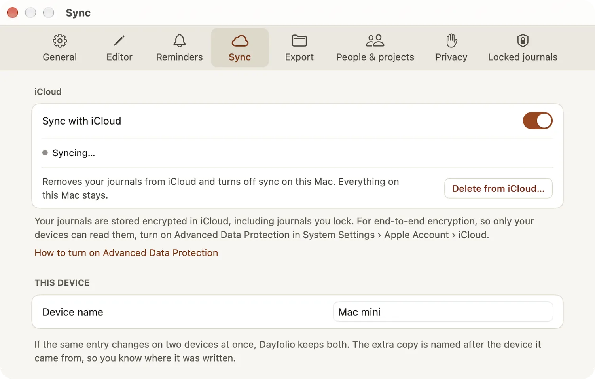

Sync and iCloud
Dayfolio keeps your journals the same on your iPhone, iPad and Mac through your own iCloud account. There’s no Dayfolio account to create and no Dayfolio server: your entries go from your devices to your private iCloud storage and back.
Turn sync on
Sync is on when you’re signed in to iCloud on the device. You can turn it off at any time in Settings › Sync › Sync with iCloud, or while you set up step by step.
On a new device signed in to the same iCloud account, Dayfolio looks for your journals in iCloud first, then opens them. Pictures and files keep downloading in the background while you work.
What syncs
Everything you write and set up: journals, templates, entries and their attachments, people, projects, places, reminders, saved searches, report presets and reports, and Recently deleted. Some settings sync too, such as the temperature unit, the Editor settings and Prepared by.
Settings about one device stay on that device: how soon locked journals lock again, the quick entry shortcut, the menu-bar icon, the quick-note link and its key, the mirror folder, Spotlight and tips. Reminders arrive on each device that has them switched on.
Encrypted in iCloud
Your journals are stored encrypted in iCloud, including the journals you lock. With Advanced Data Protection turned on for your Apple Account, they’re end-to-end encrypted, so only your devices can read them. Settings › Sync links to How to turn on Advanced Data Protection; the setting is Apple’s, not Dayfolio’s.

See where sync stands
On a Mac, the foot of the sidebar says how sync is going: Synced with iCloud, Syncing…, Offline, changes sync later, Not syncing: iCloud signed out, iCloud storage is full or Sync is off. Click it to open Settings › Sync. On iPhone and iPad, the status is in Settings › Sync.
When iCloud storage is full, text keeps syncing and files wait on the device until there’s room.
When two devices change one entry
- Changes to different fields of the same entry simply merge.
- When two devices change the same text before they sync, the later edit stays in the entry, and the other version is kept as a separate entry named “{title} (conflicted copy from {device})” in the same journal. Nothing you wrote is lost.
To tell your devices apart, give each one a name in Settings › Sync › This device › Device name. A conflicted copy is named after the device it came from.
An entry open in the editor takes changes from your other devices as they arrive, keeping your cursor where it was.
Pick up on another device
With Handoff, the entry you’re writing on one device appears in the app switcher on iPhone and iPad and in the Dock on a Mac. Open it there to carry on. Handoff is never offered for a journal you lock.
Files on cellular
On iPhone and iPad, Upload files over Wi-Fi only in Settings › Sync keeps pictures and files you add waiting until you’re on Wi-Fi. Text still syncs, and files from your other devices still download.
Turn sync off or start over
- Turning Sync with iCloud off keeps everything on the device, and leaves the copy in iCloud as it is.
- Delete from iCloud… removes the iCloud copy and turns sync off on this device. Your other devices keep their data.
- If you sign in to a different iCloud account, Dayfolio doesn’t mix the two: it asks whether to keep the journals on this device only or remove them and use the new account.
Deleting syncs too
Deleting an entry, a journal or anything else moves it to Recently deleted on every device, where it waits 30 days and can be restored. When many items arrive deleted from another device at once, Dayfolio tells you, with Review and Restore all.
Purchases on every device
A purchase covers every device of its platform signed in to your Apple Account: the Mac purchase all your Macs, the iPhone & iPad purchase all your iPhones and iPads, or one purchase for all of them. If a purchase doesn’t show on a device, choose Restore purchases in Settings › General. Prices are on the Dayfolio page.
What’s free
Sync is free, with no limit of its own. It uses your iCloud storage.